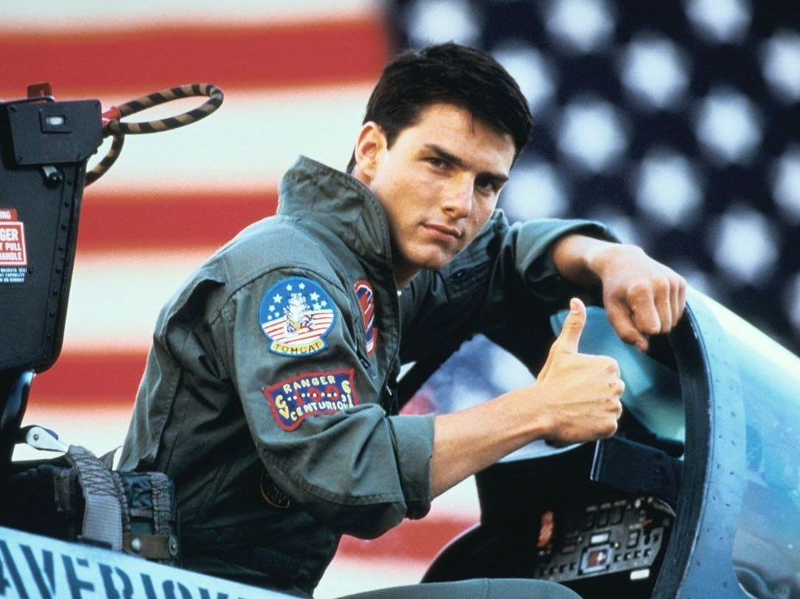

homas Cruise Mapother IV (born July 3, 1962) is an American actor and producer. He has received various accolades for his work, including three Golden Globe Awards and three nominations for Academy Awards. He is one of the highest-paid actors in the world.

Movies, & Facts Tom Cruise, byname of Thomas Cruise Mapother IV, (born July 3, 1962, Syracuse, New York, U.S.), American actor who emerged in the 1980s as one of Hollywood’s most popular leading men, known for his clean-cut good looks and versatility.
Top Gun was released on May 16, 1986. Upon its release, the film received generally mixed reviews from film critics but many particularly praised the action sequences, the effects, the aerial stunts, and the acting performances with Cruise and McGillis receiving the most praise. Four weeks after release, the number of theaters showing it increased by 45 percent.[2] Despite its initial mixed critical reaction, the film was a huge commercial hit grossing US$356 million against a production budget of only US$15 million. The film maintained its popularity over the years and earned an IMAX 3D re-release in 2013. Additionally, the film won an Academy Award for Best Original Song for "Take My Breath Away" performed by Berlin.
Top Gun was released on May 16, 1986. Upon its release, the film received generally mixed reviews from film critics but many particularly praised the action sequences, the effects, the aerial stunts, and the acting performances with Cruise and McGillis receiving the most praise. Four weeks after release, the number of theaters showing it increased by 45 percent.[2] Despite its initial mixed critical reaction, the film was a huge commercial hit grossing US$356 million against a production budget of only US$15 million. The film maintained its popularity over the years and earned an IMAX 3D re-release in 2013. Additionally, the film won an Academy Award for Best Original Song for "Take My Breath Away" performed by Berlin.
Top Gun was released on May 16, 1986. Upon its release, the film received generally mixed reviews from film critics but many particularly praised the action sequences, the effects, the aerial stunts, and the acting performances with Cruise and McGillis receiving the most praise. Four weeks after release, the number of theaters showing it increased by 45 percent.[2] Despite its initial mixed critical reaction, the film was a huge commercial hit grossing US$356 million against a production budget of only US$15 million. The film maintained its popularity over the years and earned an IMAX 3D re-release in 2013. Additionally, the film won an Academy Award for Best Original Song for "Take My Breath Away" performed by Berlin.